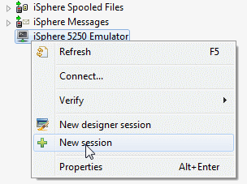
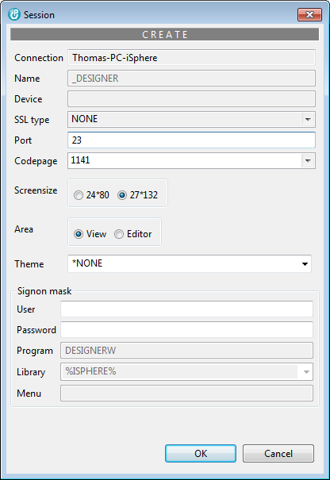
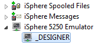
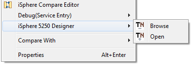
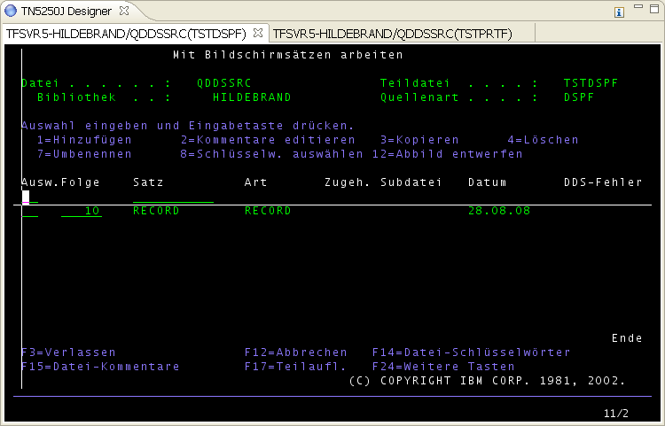
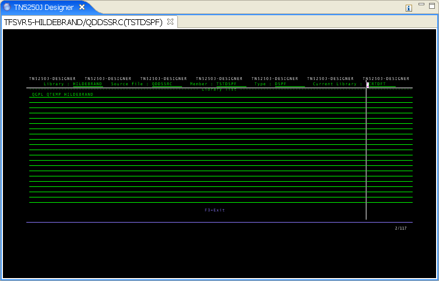

A designer session is a special session that let you use SDA and RLU for editing display and printer files from within RDi.
| System value QRMTSIGN must be set to *VERIFY or *SAMEPRF if you want to use designer sessions. |
Right-click the "iSphere 5250 Emulator" node of the Remote Systems view and select "New session".

Specify the required session properties and click [OK] to create a new designer session entry:

In comparison to a normal session a designer session requires user and password. The password will be stored encrypted. Although you can start several designer sessions you have to define just one designer session.
After having created the designer session the view "Remote Systems" looks like this:

A designer session is started from the context menu of a source member of the "Remote Systems" view. Right click a source member of type "DSPF", "MNUDDS" or "PRTF" and select "iSphere 5250 Designer":

The "TN5250j Designer" view/editor appears as shown here:

Every designer session appears in its own tab item. To toggle between the designer sessions click the specific tab item or press "Ctrl-Arrow-Up" to select the next designer session or press "Ctrl-Arrow-Down" to select the previous designer session.
To close a designer session click on the close icon on the tab item.
After designing you can leave SDA/RLU to proceed as normal. The following screen appears:

If you press "Enter" SDA/RLU will be started again. If you press "F3" the session will be closed and the tab item disappears.
If you start the designer in browse mode, then the original source will be copied to library QTEMP in file QTN5250j. After this SDA/RLU will be started with library QTEMP and source file QTN5250j. If you make now changes with SDA/RLU, then these changes have no effect to the original source.